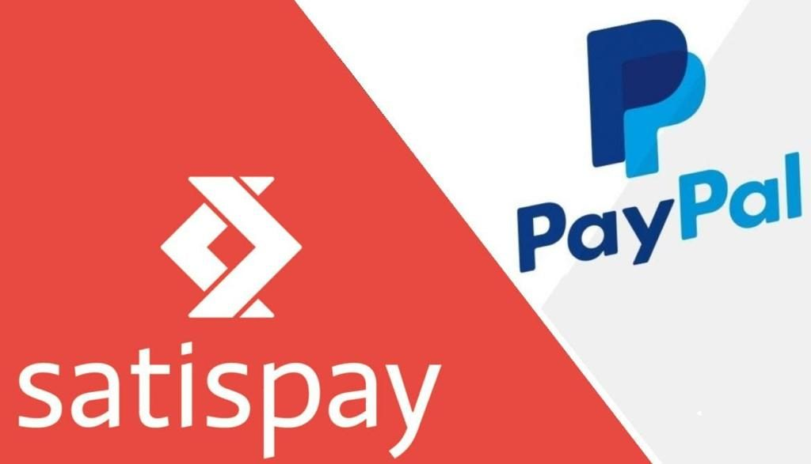

#APPROFONDIMENTI👥
⬆️📌 PayPal 🆚 Satispay (Quale scegliere?!)
I pagamenti smart si stanno diffondendo sempre più, ma Satispay e PayPal sembrano avere una marcia in più. Ecco alcune loro caratteristiche e differenze:
✅ Con Satispay possiamo collegare solo il conto corrente tramite addebito SEPA con inserimento dell’IBAN. Mente PayPal è più flessibile e possiamo collegare sia il conto corrente ma anche carte di credito e di debito.
✅ Satispay è un’azienda molto giovane, ma sta crescendo molto velocemente, e gran parte del merito va all’elemento cashback presente nel conto. Ma come funziona? Presso alcuni punti vendita selezionati (visibili nell’app) o in alcuni giorni dell’anno, è possibile fare acquisti tramite l’app ed ottenere in cambio un credito in percentuale alla spesa effettuata (5% - 10% - 20%).
✅ I costi a carico dei clienti per il pagamento tramite app e per il cashback sono, per ENTRAMBE le piattaforme, nulli.
✅ Gli oneri di spesa sono a carico del venditore. Per Satispay i costi variano in base al servizio ma per i micro pagamenti (caffè, brioche, acqua ed altro) il costo è di circa 20 centesimi ogni 100 euro di spesa.
Per PayPal il costo varia in base alla tipologia di account con in media un prezzo di 3,5% sull’importo ricevuto. Percentuale che si abbassa se abbiamo un account business e con volumi elevati.
✅ La piattaforma Satispay ha maggior fruibilità nei punti vendita diretti, dov’è maggiormente conosciuta grazie ai suoi costi ridotti, mentre la piattaforma PayPal, ha una maggior fruibilità in rete grazie alla sua solidità e fama.
✅ Un’altra importante caratteristica di Satispay è la possibilità di trasferire denaro ai propri contatti senza nessun costo per chi lo riceve e per chi lo invia.
In conclusione sono entrambe validissime piattaforme che hanno dalla loro ognuna i loro punti di forza.
Se lo desideri, iscriviti ai mie canali social per restare aggiornato ⬇️
Social MediaInoltre se hai trovato utile ed interessante questo articolo, non esitare a condividerlo, a lasciare un tuo mi piace 👍, o seguire la mia pagina Facebook per sostenermi e continuare ad informare. Grazie anticipatamente a chi vorrà farlo.